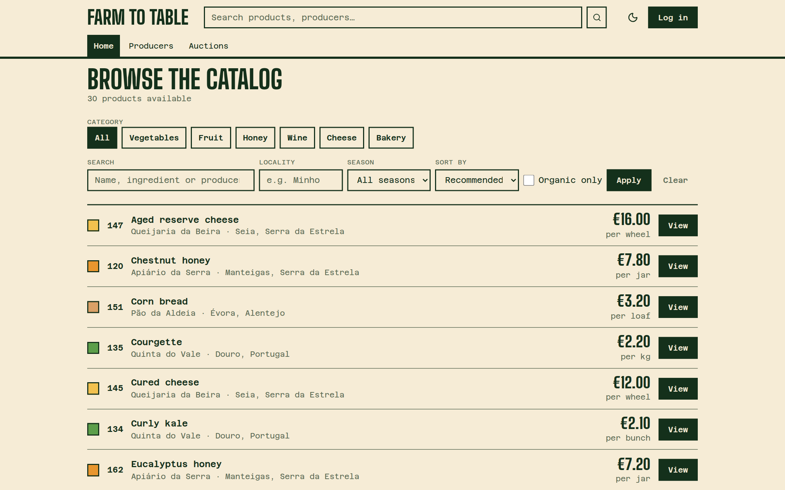
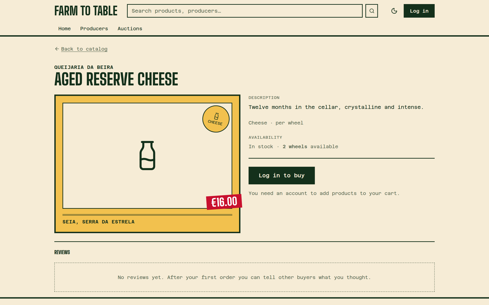
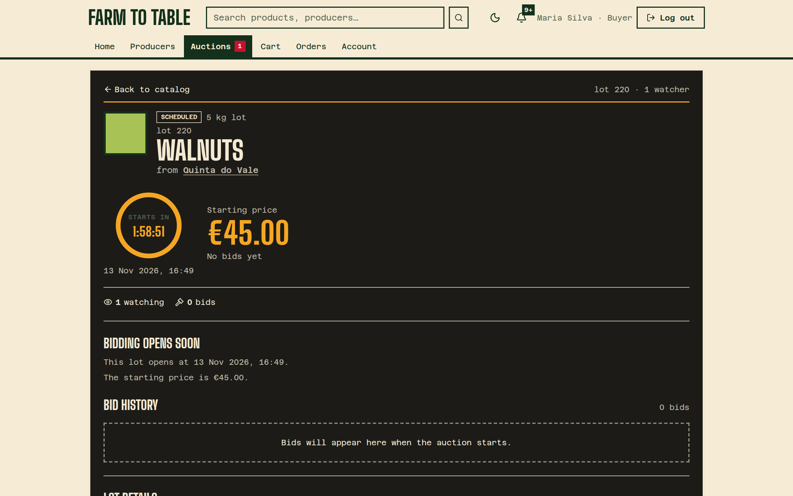
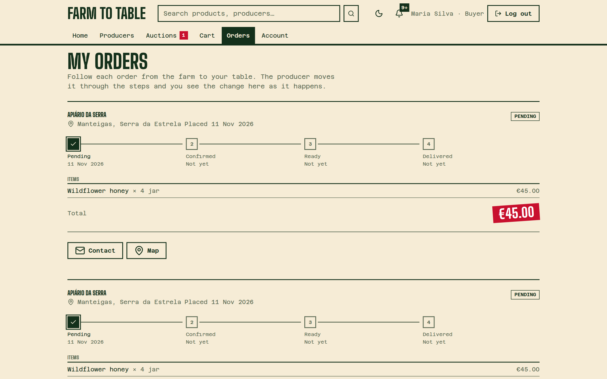
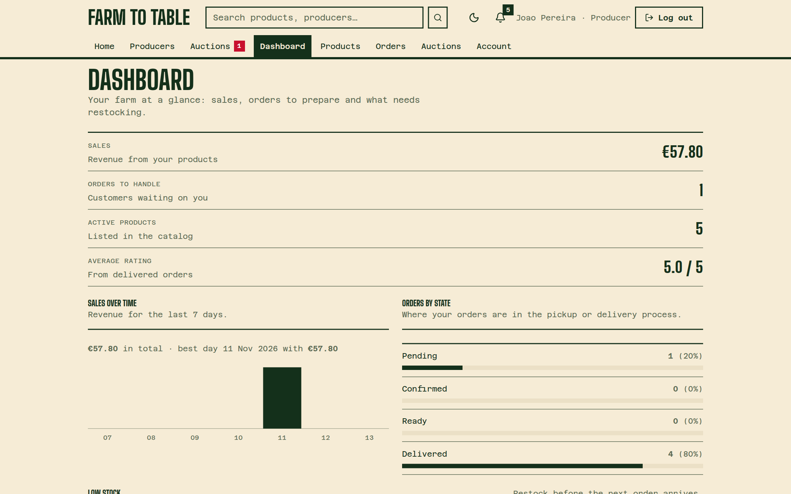
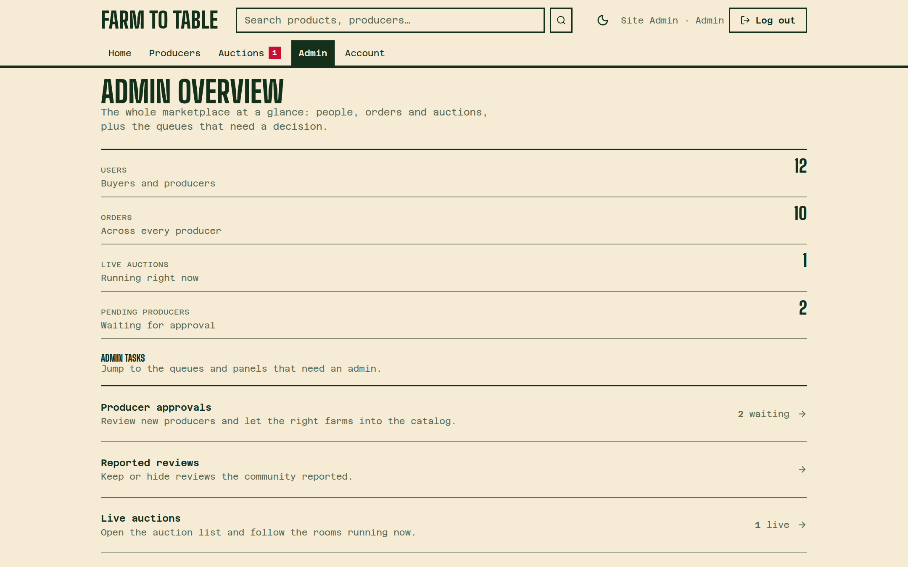

Local producers, sold direct. A marketplace with live auctions.
Farmers typically get 15–25% of the retail price (USDA ERS Food Dollar Series; similar EU figures).
Around 80% of every euro stays in the middle.
We take 5%Seia, Serra da Estrela · lot 147
The platform keeps a 5% fee per sale. That is the business model.
Two ways to buy: a normal shop with a cart, and live auction rooms where everyone sees the same price and the same clock.






farm-to-table, everything in one place.env at deploy time.env.env, not hard-codedcompose.yaml locally and in k3smainprod targetfarm-to-table-<app>:latestGitHub only builds. It never touches the servers, so no server credentials live in GitHub.
git pull, check .envrollout restartrollout status for each appPolling means GitHub never needs to reach Jenkins: no public webhook.
On failure it prints the pod states and the last cluster events, so the log says why.
git push